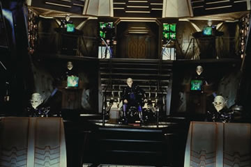
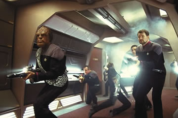
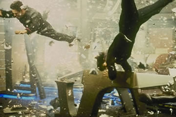
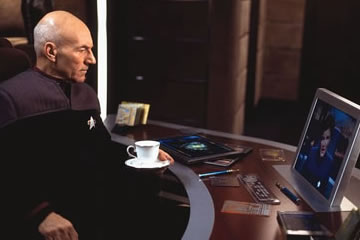

|

A ltima misso ou o
fiasco final?
Por
Cludio Silveira
Meninos, eu vi a porta
abrir e a careca do capito Picard logo depois de aparecer a
Enterprise 1701-D, agora vejo a porta da 1701-E fechar e a sua
careca indo embora nas ltimas cenas de Nmesis. Para
sempre? Entre a primeira apario da nave andando no espao e a
sua derradeira cena no dique espacial, muita coisa mudou. A
Nova Gerao comeou acanhada, se desenvolveu,
transformando-se num absoluto sucesso de pblico e crtica. Porm,
me pergunto sobre a razo de fazer uma srie de quatro filmes
para o cinema. J disse aqui uma vez sobre a importncia estratgica
do cinema para os estdios dos EUA, mas penso que h limites
para isso, quando se trata de uma srie originalmente feita para
a televiso. Concordo com nosso companheiro Gustavo Leo de que Nmesis
um bom filme, ao menos nos aspectos tcnicos. Temos que
respeitar o roteirista John Logan e o diretor Stuart Baird pelos
seus retrospectos em filmes de grande aceitao. Entretanto,
temo bater palmas para o que aconteceu dessa vez. A inteno de
usar Khan como referncia para construir um vilo inesquecvel
funcionou meia-bomba. O Shinzon, interpretado por Tom Hardy,
ficou um pouco aqum do personagem interpretado por Ricardo
Montalban em Jornada nas Estrelas II - A Ira de Khan.

De cara, cortaria as
seqncias do resgate de B4, onde Picard, Data e Worf esto a
bordo de um jipe correndo de uns caras cavernosos, no planeta
Kolarus III, ajudantes de Shinzon (porque ele careca?!) e
operando a nave auxiliar por controle remoto. Pode ser divertido,
ser a tentativa de ganhar o pblico com elementos familiares do
seu cotidiano, mas a velhssima e incansvel repetio dos
pegas de carros clssicos de Hollywood. Cortaria tambm o
excessivo tiroteio nos corredores da Enterprise, quando esses
feiosos invadem a nave. Isto serviu para dar algum herosmo
tripulao da ponte, sobretudo a Riker. Houve aqui pouca apario
dos oficiais subalternos tambm. Por fim, deixaria de lado a
maior porrada espacial do quadrante, quando nosso capito joga a
sua nave contra a Scimitar , de Shinzon. Pensei que s serve para
demonstrar a nova verso da "manobra Picard" . Ei! No
venha me dizer que d pra engolir a explcita impossibilidade de
ativar o dispositivo de destruio da Enterprise, pois at
granadas de mo e bombas portteis serviriam para detonar a
nave. Tambm no quero sequer comentar o segundo "showzinho"
de Data, saltando de uma nave para outra para salvar Picard e a ptria.
Prefiro a sua performance musical no casamento de Riker e Troi. A
questo no porque essas so "cenas de ao" ,
feitas para prender a ateno do pblico, principalmente os
mais jovens. Reparem que caiu bem o toque Vulcano de Data e a sua
fuga com Picard numa navezinha Romulana. Lembram Batman &
Robin, mas valeu. H tambm uma boa referncia ao dilema de
Picard / Locutus, no caso dos Borgs, j velhos inimigos do capito
e da Federao.

Dito isso, vamos fazer alguns elogios, como o de tomar um tema da
atualidade, a clonagem, e discutir as suas conseqncias. Assim,
permaneceram fiis a uma das caractersticas mais marcantes de Jornada
nas Estrelas . Acoplado gentica est o intuito de fazer
um jogo psicolgico de espelhos entre o vilo e o heri:
Shinzon o outro de Picard , sendo ele mesmo, com um toque
vampiresco, se baseando no Nosferatu feito por Murdau e refilmado
por Fassbinder. Isto se v pelo seu comportamento, trejeitos,
vestimentas e pelo modo como ele morto pelo capito. O ator no
comprometeu, emprestando seu talento a um personagem totalmente
oculto e marginalizado pelo Imprio Romulano : um ser criado
anteriormente para destruir a Federao, se volta contra os seus
prprios criadores e tenta construir a paz ao seu modo. Ele
demonstra a sua repulsa pelos Romulanos em todos os aspectos, at
mesmo pela comandante Romulana que parece estar interessada nele
(ou seria Shinzon "gay" ?!). Ao mesmo tempo, ele tenta
cumprir o propsito de sua vida, levando em conta o seu oposto,
com atitudes semelhantes, juntamente com o problema fsico, uma sndrome
herdada geneticamente que o levar em breve morte. Aqui a
melhor cena a do duelo final em que o vilo pergunta ao heri
se ambos completaram os seus destinos de maneira apropriada. Outro
elogio a ser feto quanto aos efeitos visuais / especiais so
bons, mostrando detalhes operacionais das naves, uma batalha no
espao e o casamento do primeiro oficial com a conselheira. Esta
teve uma boa atuao, principalmente quando da cena de estupro
mental, feito por Shinzon, quando ela estava fazendo sexo com seu
marido. Isto ajudou a dar um peso dramtico maior ao filme e foi
importante para o desfecho da trama.

O trabalho de Patrick Stewart e Brent Spiner mais uma vez prova a
grande capacidade deles, escorados por um excelente elenco de
apoio. Os dois continuaram a roubar a cena, apesar de alguns
caprichos excessivos. No foi gratuito o crescimento do prestgio
desses atores diante do pblico e dos chefes da Paramount . Data
suplantou Riker na diviso do bolo com Picard ao longo de toda a
saga. Porm, a minha simpatia pessoal pelo primeiro oficial e
pelo ator que o representa me fez sentir a sua despedida no
gabinete do capito.
Voltando s crticas, h algumas inconsistncias, criadoras de
dvidas, como a razo pela qual Janeway aparece como almirante,
dando ordens a Picard, s porque se perdeu durante sete anos do
outro lado da galxia, tendo que nadar muito pra no morrer na
praia. Enquanto Picard, um velho lobo do mar, chefe da nau capitnea
da Frota Estelar, ainda um simples capito. Outro problema
a insistncia de dar fim ao andride Data, quando seu irmo
menos dotado, B4, vai ficar por a, aprendendo a ser humano, com
todas as suas memrias. A mania de heri que morre, mas nem
tanto, no precisaria se repetir mais uma vez. um pouco
demasiado abusar da pacincia do pblico "comprende,
compadre" ?
Sobre os outros integrantes do elenco, houve um sub-aproveitamento
de Worf, sem muito o que fazer, alm de atirar e resmungar, e,
como sempre da doutora Crusher, que ficou confinada enfermaria
na maioria das vezes. Guinan tambm poderia ter mais destaque,
porque amiga e conselheira pessoal do capito. Num tipo de
confronto como esse, a sua ajuda deveria ser mais significativa
para Picard.

Tem mais uma coisa.
Algum mais entendido poderia me explicar porque a nave da Federao
corria risco de explodir somente antes e no depois da interveno
miraculosa de Data? Mudaram as leis da Fsica ou eu no entendi
nada?
Todos sabem que o filme tem sido um fiasco de bilheteria dentro e
fora dos EUA, apesar dos esforos de produo. A entrevista que
James Cameron deu recentemente Starlog e a que Patrick Stewart
deu por a, falam da preferncia atual da platia pela
fantasia, o que desvaloriza a situao da fico cientfica
tradicional. Mas isto no tudo. Tampouco verdade o
argumento de Stewart sobre uma certa ingratido dos fs de Jornada.
Essas coisas s fazem jogar mais lenha na fogueira das vaidades
sobre as deficincias do filme e sobre o futuro de Jornada,
conduzida de modo polmico por Rick Berman. Agora que tudo
acabou, possvel que abram a caixa preta para sabermos os
detalhes da aventura que ainda esto nos bastidores. Veremos...
PS : Agradeo ao Fbio e ao Carlos Jos, da reunio trekker do
Rio, o envio do material sobre Nmesis. J estamos todos
com saudades das nossas tardes em Ramos.
|